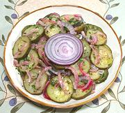

|
Zucchini SaladGreece - Kolokithakia Salata | ||||
| Makes: Effort: Sched: DoAhead: |
2 # ** 45 min Yes |
A very nice cool vegetable salad that's easy to make. In Greece it is served with fried meat patties and fish, but also makes a good buffet vegetable dish. | |||
|
2 8 1 1/4 2 1 1/4 1/8 |
# oz T c T t t t |
Zucchini, small Onion Red Parsley Dressing (1) Olive Oil ExtV Lemon Juice Oregano fresh Salt Pepper |
Make - (45 min - 15 min work)
|